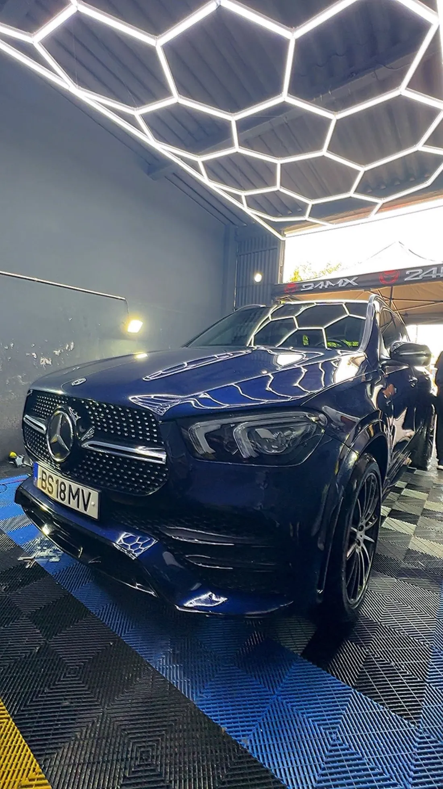

Spa do Automóvel LUX · Portalegre
Estética automóvel ao mais alto nível
Higienização interior e exterior, lavagem de estofos, renovação de faróis, polimento técnico e proteção cerâmica. Tratamos o seu carro com o rigor e o detalhe que ele merece.
Serviços
Os nossos serviços de excelência
Do interior ao exterior, cuidamos de cada detalhe da sua viatura.
-
Higienização interior e exterior
Limpeza completa da viatura por dentro e por fora, ao pormenor.
-
Lavagem de estofos
Higienização profunda de bancos, tapetes e forros com injeção-extração.
-
Renovação de faróis
Polimento e recuperação da transparência de faróis baços ou amarelados.
-
Polimento técnico e comercial
Correção de pintura e brilho profundo, para um acabamento impecável.
-
Proteção cerâmica
Camada protetora duradoura que realça o brilho e facilita a lavagem.
-
Limpeza de motor
Desengorduramento e limpeza cuidada do compartimento do motor.
Resultados
Antes & Depois
O nosso trabalho fala por si. Arraste o cursor de cada imagem para comparar o antes e o depois.
-
Tapetes e pedais
-
Tablier e interior
-
Bancos e estofos
-
Jantes e pneus
-
Jantes
Galeria
Trabalhos recentes
Uma amostra de viaturas que passaram pelo nosso spa automóvel.
{kind=link}
{kind=link}
{kind=link}
{kind=link}
{kind=link}
{kind=link}
{kind=link}
{kind=link}
Quem somos
Cuidamos do seu carro como se fosse nosso
A Spa do Automóvel LUX é um espaço de estética automóvel em Portalegre, dedicado à lavagem e ao detailing de viaturas. Cada carro é tratado com rigor, paciência e atenção ao detalhe — do interior mais delicado às jantes e à pintura.
Trabalhamos para devolver a cada viatura o aspeto de nova, com produtos e técnicas profissionais e um atendimento próximo e honesto.
«Devagar! Quem mais corre, mais tropeça.»Spa do Automóvel LUX · Portalegre
Contactos
Peça o seu orçamento
Fale connosco pelo canal que preferir — respondemos rapidamente.